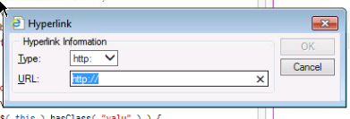
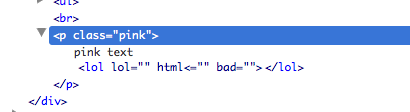
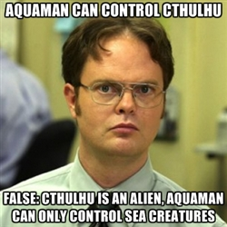

contenteditable
roll for sanity
mythos problems
how is a cthulhu like a contenteditable?
- initially: neat little magic tricks
- soon: arcane incantations, horrifying power
origins
IE 5.5
- first appearance
- hazily implemented
- used with designMode
other browsers
- adopted it
- provided new, different APIs
- this chart is hilarious
the HTML5s
- applies to any element
- designWho?
- (just playing, designMode still exists)
that's one attribute, though
supporting APIs
- fragmented in early IEs and contemporaries
- now under W3C's umbrella
- implementations becoming more standardized
- browser support documentation not so great
indirect requirements
- examining selected text
- changing selections
- contextualizing commands for selections
- gets a little shadowy
this is contenteditable
this is execCommand
contenteditable is easy and fun
using it
- apply the attribute to an element
- (user edits some text)
- submit changes explicitly using a button or link
- save changes immediately using the input event
minimal JS
var txt = $( "#editregion" );
txt[0].contentEditable = true;
txt.focus();
txt.on( "blur", function() {
$( "#editsource" ).val( txt.html().toString() );
});
congratulations!
you have made a textarea
how contenteditable is useful
- no need to toggle between display/input state
- containing undisplayed markup
- providing lightweight text editors
some caveats
- default editing is just text
- focus can be stolen by other elements
- have to kind of feel your way along
- and also the inevitable descent into madness
this is contenteditable
The most merciful thing in the world, I think, is the inability of the human mind to correlate all its contents. We live on a placid island of ignorance in the midst of black seas of infinity, and it was not meant that we should voyage far. The sciences, each straining in its own direction, have hitherto harmed us little; but some day the piecing together of dissociated knowledge will open up such terrifying vistas of reality, and of our frightful position therein, that we shall either go mad from the revelation or flee from the deadly light into the peace and safety of a new dark age.
this is execCommand :
The most merciful thing in the world, I think, is the inability of the human mind to correlate all its contents. We live on a placid island of ignorance in the midst of black seas of infinity, and it was not meant that we should voyage far. The sciences, each straining in its own direction, have hitherto harmed us little; but some day the piecing together of dissociated knowledge will open up such terrifying vistas of reality, and of our frightful position therein, that we shall either go mad from the revelation or flee from the deadly light into the peace and safety of a new dark age.
the code is simple
var demoBtns = document.querySelectorAll( "button.demo-ec" );
for ( var i = 0; i < demoBtns.length; i++ ) {
demoBtns[i].addEventListener( "click", function( e ) {
document.execCommand( this.innerText );
return false;
});
}
three arguments
- the command ID
- show UI boolean
- value
command IDs (W3C)
- bold
- createLink
- delete
- formatBlock
- forwardDelete
- insertHTML
- insertImage
- insertLineBreak
- insertOrderedList
- insertUnorderedList
- insertParagraph
- insertText
- italic
- redo
- selectAll
- subscript
- superscript
- undo
- unlink
- unselect
arcane magic (MDN)
- backColor
- contentReadOnly
- copy
- cut
- decreaseFontSize
- enableInlineTableEditing
- enableObjectResizing
- fontName
- fontSize
- foreColor
- heading
- hiliteColor
- increaseFontSize
- indent
- insertBrOnReturn
- insertHorizontalRule
- justifyCenter
- justifyFull
- justifyLeft
- justifyRight
- outdent
- paste
- removeFormat
- strikeThrough
- styleWithCSS
- underline
IE commands
the showUI argument
- generally unimplemented
- if true and implemented, shows a vendor UI
- irrelevant for simple commands
- unspecified in the standard
- ..but still exists
the value argument
- for complex commands
- URLs, HTML, CSS, etc.
- attributes of inserted tags
- or the tags themselves
sounds fun, right?

there are some issues
- current selection can affect whether commands work
- same commands produce different markup in different browsers
- values may not be faithfully appended
- values may be quietly rejected
- none of this is documented like.. anywhere
useful exercise:
add a class to an element in a contenteditable area
The most merciful thing in the world, I think, is the inability of the human mind to correlate all its contents. We live on a placid island of ignorance in the midst of black seas of infinity, and it was not meant that we should voyage far. The sciences, each straining in its own direction, have hitherto harmed us little; but some day the piecing together of dissociated knowledge will open up such terrifying vistas of reality, and of our frightful position therein, that we shall either go mad from the revelation or flee from the deadly light into the peace and safety of a new dark age.
let's talk about what works
- traditional "marking up"
- lists, indentation
- undo, redo, basic selection control
- colors and fonts (even though they shouldn't)
how about what's generated?
- generally, tags as expected
- IE uses
strongandem - non-standard commands get a
spanwith inline style - ..except in IE, where they get a
fonttag
how about what's MAGICALLY generated
blocks, y'all
- maybe it's a
div, maybe it's ap! - maybe it's nothing at all
- can be changed if formatBlock works
- ..but it doesn't in IE
- ..and only allows HTML4 block elements in FF
- ..and your formatted block might still be wrapped in the default
the (standard) commands in detail
works as expected
- bold, italic, subscript, superscript
- createLink, unlink
- delete, forwardDelete (except IE)
- insertOrderedList, insertUnorderedList
formatBlock
- accepts tags only
- no attributes
- finite list of options in FF
- no support in IE
- alters default block type of subsequent blocks added by pressing enter
insertHTML, insertImage, insertLineBreak, insertParagraph, insertText
- faithfully rendered in Chrome and FF
- nothing at all in IE
- tries really hard to parse invalid markup

- escapes HTML in insertText correctly
redo, undo
- work well in FF and Chrome
- undo works in IE, but has to undo important secret IE stuff before undoing user edits
- no redo in IE
selectAll, unselect
- work in Chrome
- selectAll works in FF
- selectAll selects everything in IE, regardless of focus
- no unselect in FF or IE
what this means for you
- don't expect consistent markup
- free-form values for complex elements basically a no-no
- no reliable way to allow users to create "special" content areas
- minimal formatting works, a CMS won't
execCommand is not easy and fun

but you don't have to rely on it exclusively
- contenteditable allows the user to position the cursor
- or to select text
- you can insert markup regardless of browser
- you can wrap a selection with tags
- this, also, is neither easy nor fun
amazingly, there's some browser consistency
window.getSelection()[Selection].anchorNode[Selection].focusNode- and more!
all we need to wrap selections
$( "section" ).on( "click", "button.cust", function( e ) {
var sel = window.getSelection(),
start = sel.anchorOffset,
end = sel.focusOffset,
anchor = sel.anchorNode,
anchorHTML,
focus = sel.focusNode,
focusHTML,
starttag = '',
endtag = '',
newHTML = "",
anchorParent = anchor.parentNode;
if ( start == 0 && anchor.nodeValue.length == anchor.parentNode.innerHTML.length ) {
anchor = anchorParent;
anchorParent = anchorParent.parentNode;
}
if ( end == focus.nodeValue.length && focus.nodeValue.length == focus.parentNode.innerHTML.length ) {
focus = focus.parentNode;
}
// nodes must be at same depth
if ( anchorParent != focus.parentNode ) {
return false;
}
$( anchorParent ).contents().each( function( el ) {
if ( this == anchor && this == focus ) {
if ( this.nodeType == 1) {
newHTML += starttag + this.outerHTML + endtag;
} else if ( this.nodeType == 3 ) {
anchorHTML = this.nodeValue;
newHTML += anchorHTML.substring( 0, start ) + starttag + anchorHTML.substring( start, end ) + endtag + anchorHTML.substring( end );
}
} else if ( this == anchor ) {
if ( this.nodeType == 1 ) {
newHTML += starttag + this.outerHTML;
} else if ( this.nodeType == 3 ) {
anchorHTML = this.nodeValue;
newHTML += anchorHTML.substring( 0, start ) + starttag + anchorHTML.substring( start );
}
} else if ( this == focus ) {
if ( this.nodeType == 1 ) {
newHTML += this.outerHTML + endtag;
} else if ( this.nodeType == 3 ) {
focusHTML = this.nodeValue;
newHTML += focusHTML.substring( 0, end ) + endtag + focusHTML.substring( end );
}
} else {
newHTML += this.nodeType == 1 ? this.outerHTML : this.nodeValue;
}
});
anchorParent.innerHTML = newHTML;
return false;
});
that's minimally functional
- won't wrap nodes that don't share a parent
- hard-coded wrapping HTML
- only works for forward selections (LTR in English)
- probably a bunch more edge cases
but try not to think too hard about that
gaining access to selections
window.getSelection()works in modern browsers- can access text in selection with
toString() - can also access and manipulate ranges in the selection
- what's a range?
figuring out what the heck is in a selection
anchorNodeandfocusNodedefine beginning and end- selection may contain additional child nodes
- find a common parent, loop through child nodes testing for equality
- any of these nodes may be text nodes
text nodes
nodeValueinstead ofinnerHTML- can't have HTML added to them
- in every tag, around anything that's not a tag
- no selector on earth will find them
- hence, looping and testing for equality
even more fun
- selections prefer to be text nodes
- selecting an entire element frequently provides a child text node
- to wrap an element, probably have to get text node's parent manually
but it works
positioning the cursor
- execCommands acting on a selection maintain it
- IE had a cool method called
setSelection() - cache
getRangeAt(0), do work, reset, done! - you'd think you could fake that by manually setting a selection's ranges
- ..but you'd be wrong
positioning the cursor inside a container
txt.focus();
positioning the cursor at the end of a container
sel.selectAllChildren( txt[0] );
sel.collapseToEnd();
what have we learned?
- how to work with contenteditable at an advanced level
- what not to expect
- what to do instead
"i've never once needed contenteditable"
- cutting edge browser features are awesome
- they attract a lot of attention, get implemented quickly
- the more esoteric bits, especially the old ones, can get left behind
- being able to work with those is a powerful skill
- some of the most interesting stuff you can do with a browser has nothing to do with WebGL
working with ancient APIs
- assume the documentation is out-of-date
- assume the standards are at least partially unimplemented
- write a test page
- build the documentation you need from console.dir